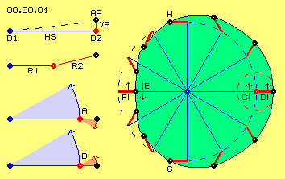
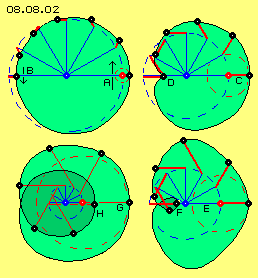
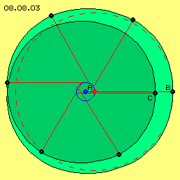
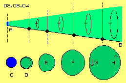

Nachfolgend wird die Charakteristik solcher ungleichförmigen Bahnen sowie diese Ausweitung der Schwingungs-Radien diskutiert. In Bild 08.08.01 sind die generellen Überlegungen schematisch skizziert.
Viele Überlagerungs-Möglichkeiten
In vorigen Kapiteln wurde die Überlagerung eines horizontalen Schwingens HS und eines vertikalen Schwingens VS beschrieben, wobei ein beobachteter Ätherpunkt AP z.B. auf einer diagonalen Bahn zustande kommt (siehe links oben im Bild). Diese Neigung von sieben Grad (siehe gestrichelte Linie) entspricht z.B. der Neigung der Ekliptik gegenüber dem Sonnen-Äquator, abgeleitet aus einer Drehung um die Systemachse D1 und der Drehung der rundum angeordneten ´Uhren´ um ihren jeweiligen Drehpunkt D2 (wie in vorigen Kapiteln dargestellt wurde).
Die beiden Radien R1 und R2 können theoretisch beliebig lang sein und natürlich müssen beide Bewegungen nicht senkrecht zueinander stehen, sondern können beliebige Winkel aufweisen (wie im Bild links in der zweiten Zeile skizziert ist). Die Konsequenzen solcher Überlagerungen sind am einfachsten darzustellen, wenn beide Bewegungen in einer Ebene liegen (wie nachfolgend unterstellt ist). Beide Bewegungen können gleich schnell drehend sein, z.B. je Zeiteinheit 30 Grad durchlaufen (wie links unten durch blaue und rote Segmente skizziert ist). Die Drehzahl kann aber auch unterschiedlich sein (was erst später besprochen wird). Zudem können beide Bewegungen in unterschiedlichem Sinne drehen (bei A) oder gleichsinnig drehend sein (bei B und nachfolgend unterstellt).

Ungleichförmige Bahn
In diesem Bild rechts ist die Bahn eines Ätherpunktes (schwarz) dargestellt. Um den zentralen Drehpunkt (blau) ist eine Drehbewegung an langem Radius (blau) gegeben, hier linksdrehend unterstellt (siehe Pfeil C). Ein blauer ´Uhrzeiger´ ist in zwölf Positionen eingezeichnet. Am Ende des Uhrzeigers befindet sich der zweite Drehpunkt (rot), der im Raum auf einer Kreisbahn wandert (siehe blau gestrichelter Kreis).
Um diesen zweiten Drehpunkt gibt es wiederum eine Kreisbewegung gegen den Uhrzeigersinn (siehe Pfeil D und rot gestrichelter Kreis), hier mit etwas kürzerem Radius. Auch dieser Uhrzeiger (rot) ist wieder in zwölf Positionen eingezeichnet. An dessen Ende befindet sich der beobachtete Ätherpunkt (wobei dieser eine Punkt hier ebenfalls in zwölf Positionen auf seiner Bahn im Raum eingezeichnet ist).
Die Fläche innerhalb dieser Bahn ist grün markiert und damit verdeutlicht, dass diese zwar symmetrisch, aber nicht gleichförmig ist. Rechts weist der rote Radius nach außen, während er nach einer halben Umdrehung nach innen weist. Die Bahn ist also einerseits ausgeweitet (hier rechts) und andererseits eingedellt (hier links).
(Wellen-) Bewegung mit Schlag
Rechts (bei C und D) addieren sich beide Bewegungen und der Ätherpunkt kommt je Zeiteinheit weit voran, wie aus dem großen Abstand zwischen seinen Positionen ersichtlich ist. Links (bei E und F) sind beide Bewegungen gegen einander gerichtet, so dass der Ätherpunkt je Zeiteinheit nur wenig voran kommt. Im unteren Abschnitt der Bahn (von E nach D) findet eine Beschleunigung statt, während im oberen Bahnabschnitt (von D nach E) die Bewegung verzögert wird.
Während der Hälfte der Zeit kommt der Ätherpunkt im linken Bahnabschnitt (von H nach G) nur langsam voran, während er in der anderen Hälfte der Zeit einen weiten Weg (von G nach H) zurück legt. Anstelle des bislang unterstellten gleichförmigen Schwingens auf Kreisbahnen wird real also das Schwingen auf ungleichförmigen Bahnen statt finden.
Durch die damit verbundenen Phasen von Verzögerung und Beschleunigung wird sich ein Ätherpunkt immer auf einer Bahn-mit-Schlag bewegen. Aus der Bewegung benachbarter Ätherpunkte (bzw. der Verbindungslinien zwischen zeit-versetzten Uhren) wurde im vorigen Kapitel festgestellt, dass sich dabei eine sekundäre Erscheinung einer umlaufenden Welle ergibt. Wenn anstelle gleichförmig drehender Uhren nun aber real ein Schwingen-mit-Schlag gegeben ist, werden auch diese scheinbaren Wellen nicht mehr gleichförmig sein, sondern ebenfalls Wellen-mit-Schlag darstellen.
Mehr oder weniger Harmonie

Im vorigen Beispiel waren der innere und äußere Radius etwa im Verhältnis 4:1 angelegt, womit sich eine relativ ´runde´ Bahn ergibt. In Bild 08.08.02 sind andere Verhältnisse der Radien dargestellt, womit sich unterschiedliche Charakteristik der Bahnen ergibt. In der oberen Hälfte sind jeweils die Positionen der Radien und des jeweiligen Ätherpunktes eingezeichnet, in der unteren Hälfte sind nurmehr die Konturen der Bahnen markiert.
Im Bild oben links ist der äußere Radius kleiner gewählt. Es ergibt sich ebenfalls ein ´runder´ Bahnverlauf und das Schlagen ist damit weniger ausgeprägt (siehe Pfeile A und B).
Im Bild oben rechts ist der äußere Radius größer gewählt (siehe C), länger als obiges Viertel des inneren Radius. Anstelle der Eindellung weist die Bahn nun eine Kerbe (siehe D) auf, d.h. es kommt dort zu einer scharfen Verzögerung, kurzfristigem Stillstand und anschließender Beschleunigung. Im lückenlosen Äther ergibt sich dabei Stress, d.h. eine Überlagerung mit dieser Relation der Radien ist sehr unharmonisch.
Im Bild unten rechts ist der äußere Radius nahezu so lang wie der innere Radius (siehe E). Anstelle der vorigen Einkerbung bildet die Bahn nun eine Schleife (siehe F, dunkelgrün markiert), womit zwar die Bewegungsrichtungen wechseln, der Stillstand aber vermieden wird. Auf der anderen Seite ist die Ausweitung (rechts außen) der Bahn nun aber nicht mehr ganz harmonisch.
Ein harmonischer Bahnverlauf ergibt sich erst wieder, wenn der äußere Radius (rot) länger ist als der innere Radius (blau), wie im Bild unten links dargestellt ist. Die Schleife (bei H, dunkelgrün markiert) wird dabei wesentlich größer und reicht über die Systemachse hinaus. Der Ätherpunkt wird vom Scheitel der Schleife (bei H) beschleunigt und bewegt sich auf einer Spiralbahn auswärts (bis G), danach wieder auf analoger Bahn verzögert einwärts.
Obwohl sich hier also zwei Bewegungen auf jeweils runder Kreisbahn überlagern, muss die daraus resultierende Bahn keinesfalls immer ´rund´ sein. Nur bei bestimmter Relation der Radien ergeben sich harmonische Bahnen (wenn der äußere Radius länger ist als der innere oder gleich bzw. kleiner als ein Viertel des inneren Radius ist). Allerdings ergeben sich wieder andere Bahnverläufe bei Überlagerung von Kreisbewegungen unterschiedlicher Drehzahl oder in abweichenden Ebenen oder bei Überlagerung von mehr als zwei Bewegungen (was hier nicht ausgeführt wird). In jedem Fall aber ergibt sich, dass real praktisch immer nur Bewegung auf Bahnen-mit-Schlag statt finden wird.
Ausweitung

Die Bewegung Freien Äthers erfolgt auf Bahnen, die aus der Überlagerung einer großen Zahl von Bewegungen resultiert. Es gibt darin keine langen Bahnabschnitte, die geradeaus oder in Kreisbögen verlaufen. Die Bewegungen stellen vielmehr ein ´Spiralbahnenknäuel´ dar, zusammengesetzt aus quanten-kleinen Abschnitten unterschiedlichster Richtung, Geschwindigkeit und Krümmung. Wenn hier die Bewegung Freien Äthers als eine Kreisbahn dargestellt wird, ist das also eine sehr grobe Vereinfachung.
In Bild 08.08.03 stellt der rote Radius diese vereinfachte Kreisbewegung Freien Äthers dar (siehe gestrichelter Kreis). Der Beginn der Ausweitung vom feinen Schwingen zum groberen Schwingen erfolgt dadurch, dass das Bewegungszentrum nun seinerseits in eine schwingende Bewegung übergeht. Dieses innere Schwingen wird hier durch den blauen, sehr kurzen Radius repräsentiert (siehe A bzw. blauer Kreis).
Wie im vorigen Bild unten-links ergeben sich damit eine innere Schleife (dunkelgrün) und eine weite Schleife (hellgrün). Zu Beginn dieses zusätzlichen Schwingens liegen die Scheitelpunkte der inneren Schleife (C) nahe beim Scheitelpunkt der äußeren Schleife (B). Sehr bald wird das ´innere Zittern´ stärker und damit die Innen-Schleife kleiner (wie in vorigem Bild unten-rechts).
Es könnte auch zur kritischen Einkerbung kommen (im vorigen Bild oben-rechts, z.B. vergleichbar zum zeitweiligen ´Zittern´ eines Kreisels). Allerdings wird der Äther-Stress durch die anderen vielfältigen Überlagerungen des Freien Äthers ´überspielt´. Danach kann der innere Radius weiter anwachsen und auch der äußere Radius. Solange der äußere Radius kleiner als ein Viertel des inneren bleibt, ergibt sich eine harmonische Bahn - aber in jedem Fall ´mit Schlag´, egal welche anderen Bewegungen zusätzlich überlagert werden.

In Bild 08.08.04 ist diese kegelförmige Ausweitung des Schwingens vom Freien Äther (hier links bei A, blau markiert) zum groberen Schwingen des Gebundenen Äthers (hier rechts bei B) noch einmal schematisch dargestellt. Vier Ätherpunkte (schwarz) sind auf einer Verbindungslinie eingezeichnet, die an diesem Kegelmantel auf jeweils weiteren Bahnen schwingen (und parallel dazu alle Nachbarn dieser Ebenen).
In der unteren Zeile sind die Bahnen im Querschnitt durch den Kegel skizziert (in grobem Maßstab). Links bei C soll die blaue Fläche die Bewegung Freien Äthers als simple Kreisbewegung repräsentieren. Wenn dessen Bewegungszentrum in zusätzliches Schwingen kommt, ergibt sich anfangs die Bahn mit weiter und enger Schleife, wie bei D als grüne Fläche markiert ist.
Wenn das mittige Schwingen dann über den Bewegungsraum des feinen Schwingens hinaus reicht, geht die Bahn über in vorigen ungleichförmigen Verlauf, wie bei E markiert ist. Von dort an können die Radien beider überlagerten Schwingungen länger werden. Wenn die Länge des äußeren Radius etwa ein Viertel des inneren Radius beträgt, ergibt sich ein runder Bahnverlauf, wie etwa bei F markiert ist. In jedem Fall aber wird das grobe Schwingen unterschiedliche Phasen aufweisen, eine relativ langsame Bewegung bei der Eindellung G und das ´Schlagen´ bei der Ausweitung H.
Differenzierte Bewegung
Obwohl der Äther keinerlei Lücken aufweist, ist dennoch Bewegung innerhalb dieses Plasmas gegeben. Diese Bewegung ist immer während, kann insgesamt sogar niemals geringer werden. Allerdings kann lokal erhöhte Bewegungsintensität auftreten mit grobem Schwingen. Aber auch dieses wird praktisch niemals auf Kreisbahnen statt finden, sondern immer auf Bahnen-mit-Schlag, also unterschiedlichen Phasen. Die differenzierten Bewegungen haben natürlich einen wesentlichen Einfluss auf die Erscheinungen des Gebundenen Äthers, wie in nachfolgenden Kapiteln dargestellt wird.